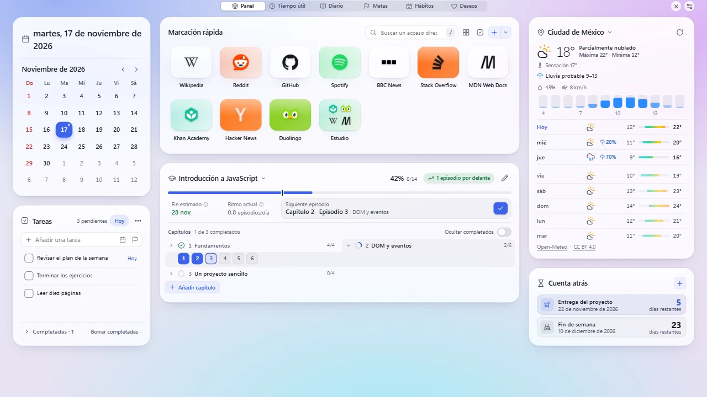
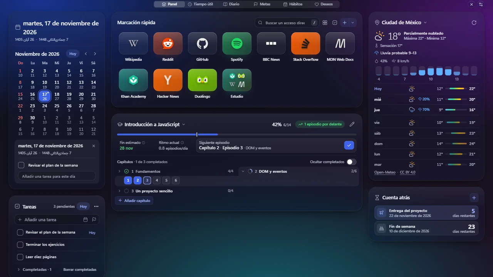

Tu nueva pestaña de Chrome con tareas y calendario
Con Tivona puedes abrir tus sitios habituales, ver qué tareas vencen hoy y empezar una sesión de concentración desde la misma pestaña. Si estás preparando una entrega, elige el día en el calendario y añade allí lo que te falta por hacer.
Extensión gratuita para Chrome en computadoras. Tivona sustituye la página de nueva pestaña y funciona sin una cuenta de Tivona.

Organiza tus sitios y planifica tu día
Accesos directos y marcadores en carpetas
Agrupa los sitios de clase o trabajo en una carpeta de acceso rápido. Puedes buscar un acceso con el teclado e importar una carpeta de marcadores de Chrome.
Lista de tareas con fechas de entrega
Añade una fecha de entrega, una prioridad, notas y pasos. Consulta las tareas de hoy y las atrasadas o selecciona cualquier día del calendario para ver lo que tienes previsto.
Calendarios gregoriano, persa e islámico
Usa el calendario mensual para revisar tus fechas. Puedes alternar entre el gregoriano, el persa (shamsí o yalalí) y el islámico (hiyri), o mostrar varias fechas juntas. La vista persa indica los días festivos de Irán.
Temporizador Pomodoro para tus tareas
Ajusta la duración de cada sesión y descanso o usa el cronómetro. Inicia el temporizador desde los detalles de una tarea y guarda el tiempo que le dedicaste.

Elige qué herramientas quieres ver. Puedes consultar el tiempo, añadir una cuenta regresiva, seguir tus hábitos, metas y cursos o escribir en tu diario.
Prepara tu primera pestaña
- Instala Tivona desde Chrome Web Store y abre una nueva pestaña.
- Añade un sitio que uses a diario o ponle fecha a una tarea.
- En Configuración, elige el idioma, el calendario y las herramientas que quieres tener a mano.
Preguntas frecuentes
¿Puedo importar mis marcadores de Chrome?
En el panel de acceso rápido, elige la opción de importar marcadores de Chrome. Tivona solicita permiso y copia la carpeta que selecciones.
¿Qué pasa si ya uso otra extensión de nueva pestaña?
Chrome permite que una extensión controle la nueva pestaña a la vez. En la página de extensiones de Chrome puedes elegir cuáles están habilitadas.
¿Cómo traslado mis tareas a otra computadora?
Ve a Configuración → Datos, exporta una copia de seguridad y restaura ese archivo en Tivona en la otra computadora. La copia incluye tus tareas.
Uso sin conexión y privacidad
El calendario, las tareas, el diario y el temporizador funcionan sin conexión. Para abrir sitios y descargar el pronóstico o iconos de internet necesitas conexión.
Tus tareas, el diario y el historial de concentración se guardan en este equipo. Chrome puede sincronizar algunos ajustes y accesos si activas su función de sincronización. Las versiones configuradas para PostHog ofrecen una opción para compartir datos de uso que viene desactivada. Política de privacidad (en inglés)
Ayuda y comentarios
Para recuperar datos después de una actualización, ve a Configuración → Datos → Copias de seguridad automáticas. Si necesitas ayuda, escribe al soporte de Tivona o consulta la sección de asistencia en la ficha de Chrome Web Store.